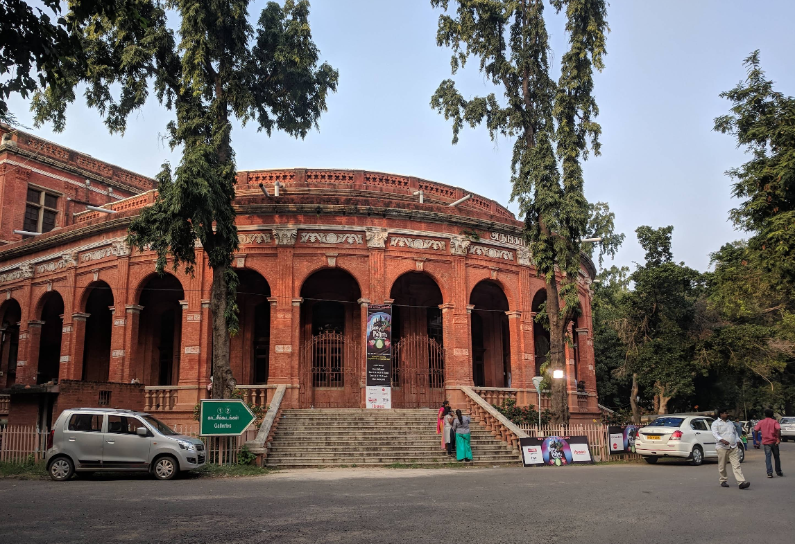

The Government Museum in Chennai (Madras Museum) is India's second-oldest museum, located in Egmore, housing vast collections in its six buildings, including stunning South Indian bronze sculptures (like Nataraja), Roman antiquities (largest outside Europe), Amaravati Buddhist sculptures, natural history exhibits, and the National Art Gallery with rare paintings, offering a comprehensive journey through India's art, history, and culture from ancient to modern times.